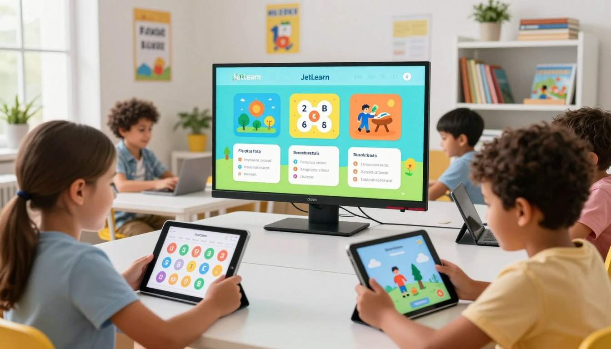

Somos mentes curiosas, desarrolladores y pedagogos unidos para transformar contenidos tradicionales en experiencias interactivas que enganchan.

Antares Digital nace como una factoría de contenidos especializada en formatos SCORM para licenciar en teleformación, pero siempre orientados a ofrecer la máxima calidad a nuestros clientes para que puedan ofrecer las especialidades formativas y también los certificados profesionales más demandados por los usuarios
Nuestro principal propósito es ahorrar tiempo y recursos a las empresas y centros de formación. Al ofrecer contenidos multimedia e interactivos ya diseñados y 100% listos para usar, eliminamos la necesidad de invertir meses en la creación de materiales desde cero. Esto permite a nuestros clientes simplificar la gestión de la teleformación y enfocarse por completo en el desarrollo de su proyecto empresarial.

Creamos experiencias de aprendizaje basadas en la interactividad y los recursos multimedia para mantener al alumno siempre interesado. Todos nuestros contenidos son diseñados por personas expertas en cada área profesional, garantizando la máxima exigencia pedagógica y una implementación rápida y fácil. Además, disponemos de una gran variedad de sectores profesionales, lo que nos permite ofrecer una formación flexible y 100% adaptable a las necesidades de cada proyecto.